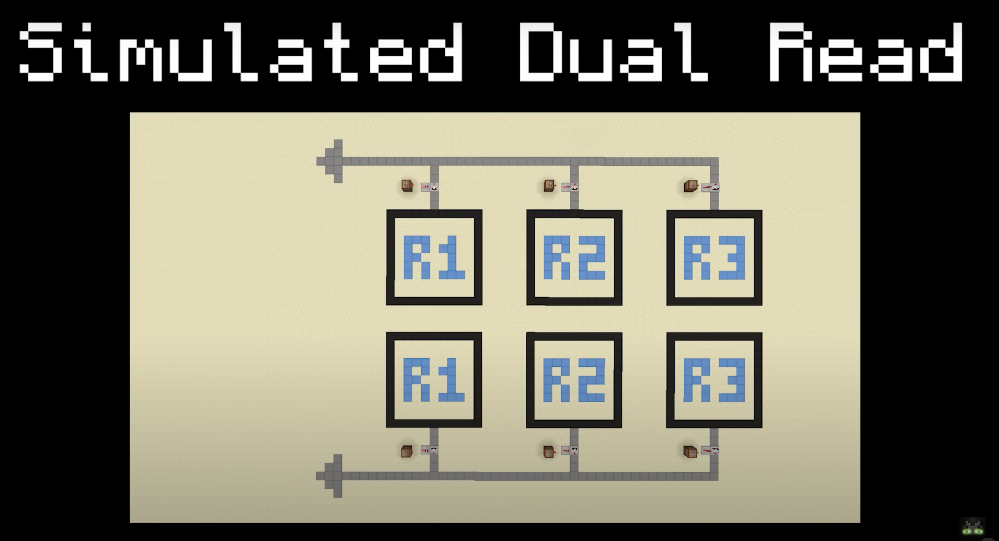

There is a big problem with our current setup, however. The issue occurs when we have two register operations. In general, add operations may look like:
add r2 r1 r1
addi r2 7
In the first instruction, we add r1 to r1 and then write that value to r2 in memory. In the second instruction, we add r2 with 7, and store that result in r2.
If we could only read a register one at a time, it would be very difficult to handle add operations with two operands because we would need the value of both input registers to be read at once.
We would either need to store the value of one register somewhere while we read a second register and perform some operation in the ALU. That sounds complicated and would increase memory constraints.
There are a few ways to go about this. The following depictions are accredited to matbatwings:
True Dual Read: We only store the memory once but we can read two registers using two separate lines (e.g., r1 on one line and r3 on another line).
Simulated Dual Read: We duplicate all the memory and read from two lines. Although true dual read is more efficient, this method is FAR easier to implement in Vanilla Minecraft, so this is the way we show it in class.
